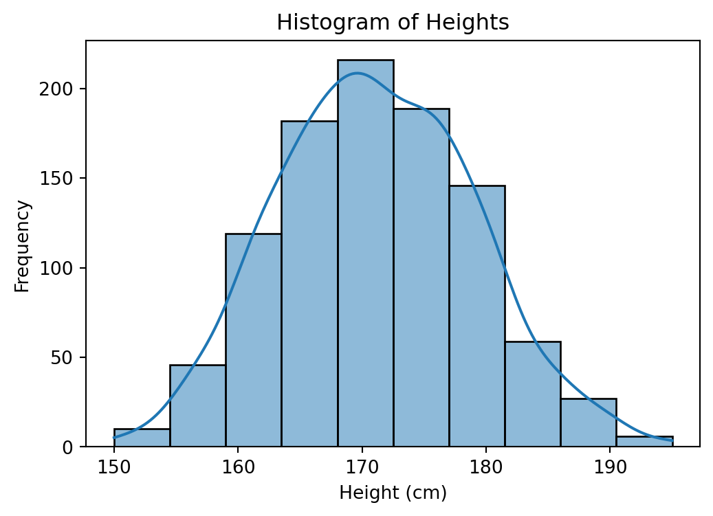
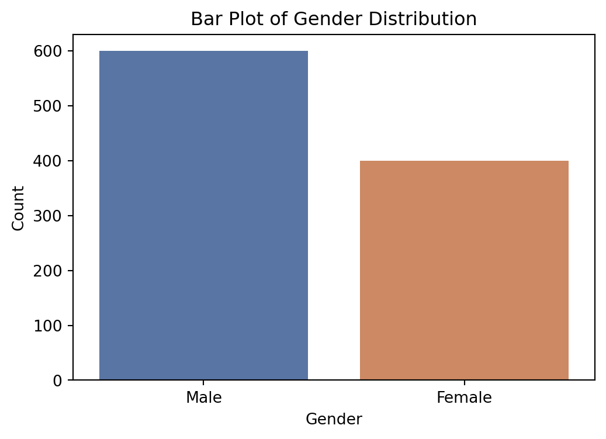
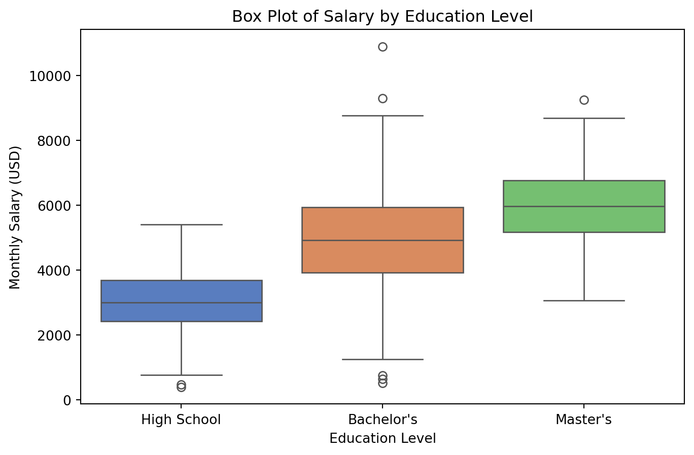
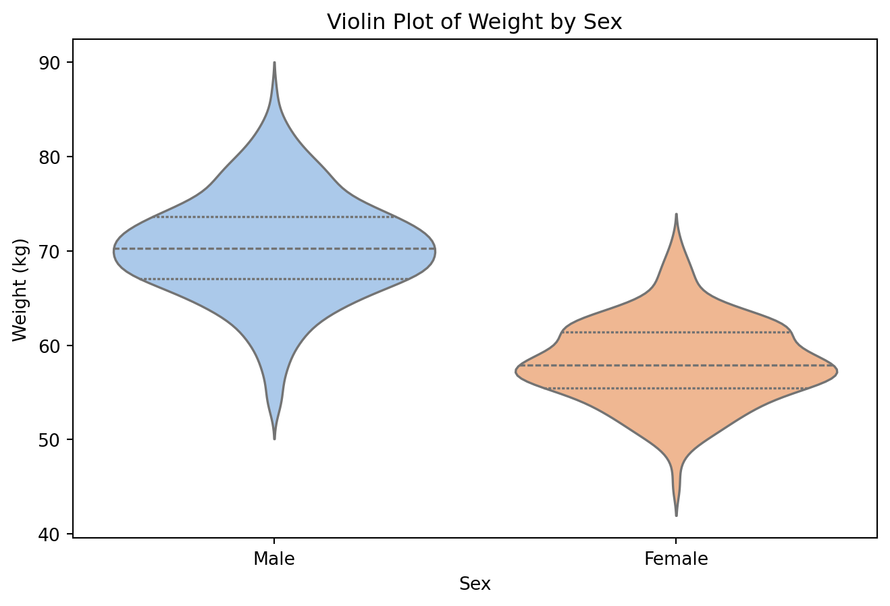
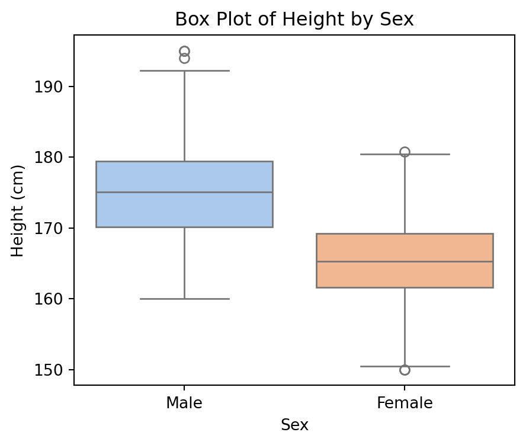
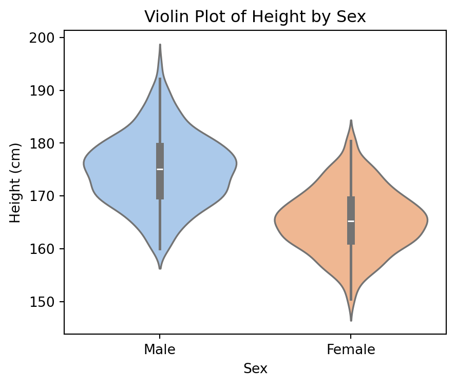
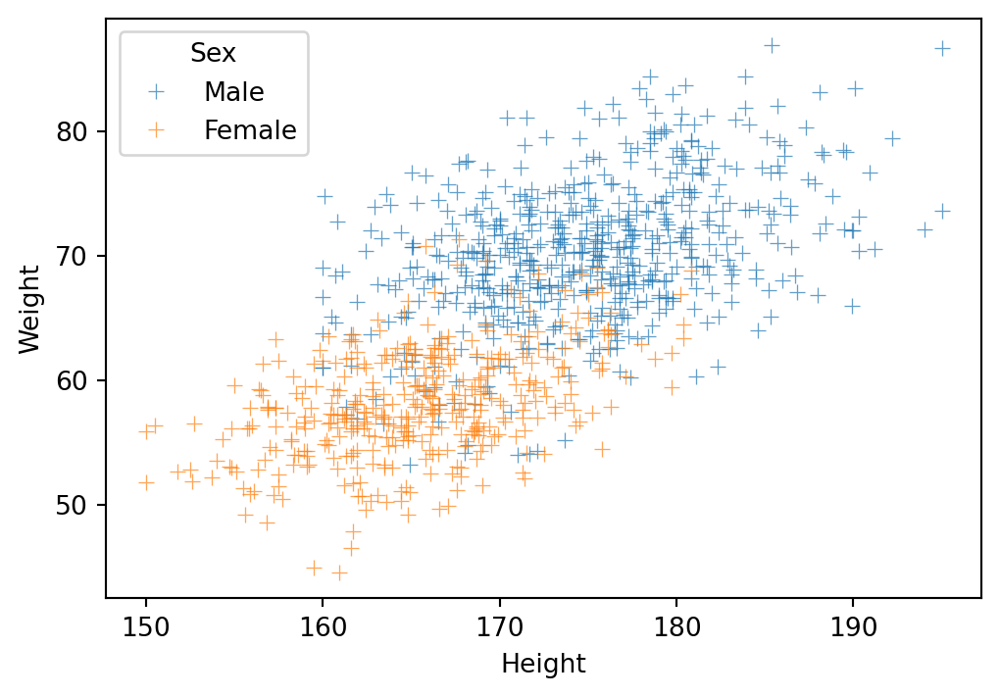
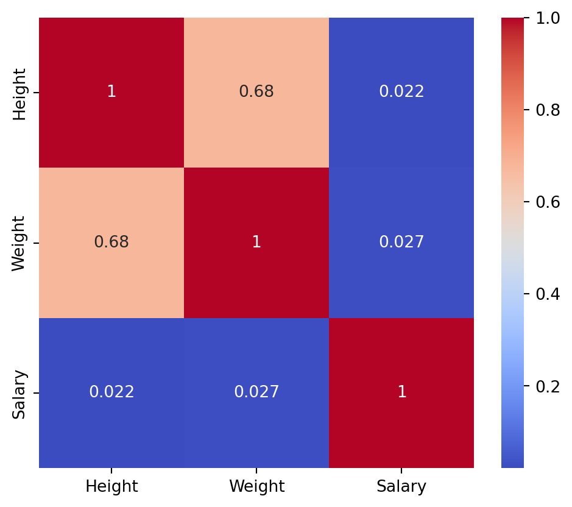
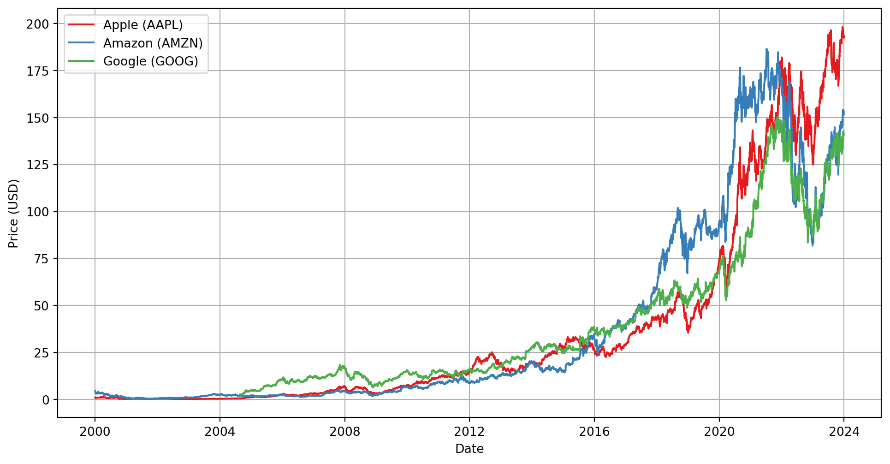

| Height | Weight | Sex | Education | Salary | |
|---|---|---|---|---|---|
| 0 | 178.5 | 78.4 | Male | Bachelor's | 5860 |
| 1 | 174.0 | 74.2 | Male | High School | 1215 |
| 2 | 179.5 | 72.1 | Male | Bachelor's | 4461 |
| 3 | 185.7 | 71.0 | Male | High School | 3302 |
| 4 | 173.4 | 72.8 | Male | Master's | 6184 |
Data Visualization
Introduction
This guide provides an overview of common data visualization types, when to use them, when not to use them, and how to implement each in Python. We cover histograms, bar plots, box plots, scatter plots, line plots, heatmaps, and pie charts, using the same dataset to illustrate each.
Dataset Summary
- The dataset,
people, contains 1000 samples and includes the following columns:
| Column | Data Type | Description | Values (Example Range) |
|---|---|---|---|
| Height | Quantitative | Height in cm, with males having a higher average height than females. | Males: ~168-182 cm, Females: ~159-171 cm |
| Weight | Quantitative | Weight in kg, with males having a higher average weight than females. | Males: ~68-88 kg, Females: ~57-73 kg |
| Sex | Categorical | Biological sex, represented by “Male” and “Female”. | Male, Female |
| Education | Ordinal (Ordered) | Education level with ordered categories: High School < Bachelor’s < Master’s. | High School, Bachelor’s, Master’s |
| Salary | Quantitative | Monthly salary in USD, with increasing average salaries by education level for realism. | High School: ~$2500-3500, Bachelor’s: ~$4200-5800, Master’s: ~$6000-8000 |
Dataset Overview
Histogram: Distribution of a Quantitative Variable
- Condition: Use a histogram to observe the distribution of a single quantitative variable, such as heights in the dataset.
- Purpose: Helps identify the shape of the data distribution, central tendencies, spread, and any outliers.
- Example: Here, we use a histogram to show the distribution of heights.
plt.figure(figsize=(6, 4))
sns.histplot(data = people, x = 'Height', bins=10, kde=True)
plt.title('Histogram of Heights')
plt.xlabel('Height (cm)')
plt.ylabel('Frequency')
plt.show()
The histogram above shows the distribution of heights in the dataset. We observe a roughly normal distribution around the mean, which can help identify the typical range of heights, any skewness, and the presence of outliers.
Bar Plot: Categorical Data Comparison
- Condition: Use a bar plot to compare counts or proportions within categorical data, such as gender or education levels.
- Purpose: Bar plots make it easy to see differences between categories.
- Example: The bar plot below compares the count of individuals by gender.
plt.figure(figsize=(6, 4))
sns.countplot(data = people, x = 'Sex', palette='deep')
plt.title('Bar Plot of Gender Distribution')
plt.xlabel('Gender')
plt.ylabel('Count')
plt.show()
The bar plot above shows the distribution of gender in the dataset, making it clear how many individuals identify as male or female. This visualization is ideal for comparing discrete categories and understanding the sample’s gender composition.
Box Plot: Spread of a Quantitative Variable Across Categories
- Condition: Use a box plot to compare the spread of a quantitative variable across categories, such as income levels across different education levels.
- Purpose: Box plots highlight medians, quartiles, and potential outliers, offering insights into variability within groups.
- Example: The box plot below shows the spread of income across different education levels.
plt.figure(figsize=(8, 5))
sns.boxplot(data = people, x='Education', y='Salary', palette='muted')
plt.title('Box Plot of Salary by Education Level')
plt.xlabel('Education Level')
plt.ylabel('Monthly Salary (USD)')
plt.show()
The box plot above shows the distribution of salaries across different education levels. It reveals medians, quartiles, and any potential outliers, helping us understand income variability within each education group. For instance, we can see if higher education correlates with higher median income.
Violin Plot: Distribution and Density of a Quantitative Variable Across Categories
- Condition: Use a violin plot to visualize the distribution and density of a quantitative variable across categories, such as test scores across different teaching methods.
- Purpose: Violin plots combine features of box plots and density plots, revealing not only medians and quartiles but also the shape and symmetry of the data distribution within categories.
- Example: The violin plot below illustrates the distribution of test scores across different teaching methods.
plt.figure(figsize=(8, 5))
sns.violinplot(data=people, x='Sex', y='Weight', palette='pastel', inner='quartile')
plt.title('Violin Plot of Weight by Sex')
plt.xlabel('Sex')
plt.ylabel('Weight (kg)')
plt.show()
The violin plot above illustrates the weight distribution for males and females. It highlights the density of weights within each sex category, along with the median and interquartile range. For instance, we can observe whether one sex has a broader range of weights or whether the distribution is skewed differently for males versus females.
Comparison Between Box Plot and Violin Plot
| Feature | Box Plot | Violin Plot |
|---|---|---|
| Purpose | Summarizes data spread using quartiles, median, and outliers | Shows both data density (distribution shape) and summary statistics |
| Distribution Shape | Does not reveal the distribution shape | Displays the distribution shape using density estimation |
| Data Insights | Emphasizes median, quartiles, and outliers | Emphasizes distribution, skewness, modality, and median |
| When to Use | For clear comparisons of summary statistics across categories, especially with small sample sizes | For understanding the full distribution of data across categories, especially with larger sample sizes |
plt.figure(figsize=(5, 4))
sns.boxplot(data=people, x='Sex', y='Height', palette='pastel')
plt.title('Box Plot of Height by Sex')
plt.xlabel('Sex')
plt.ylabel('Height (cm)')
plt.show()
- The box plot provides a clear summary of medians and outliers for the height for each sex.
plt.figure(figsize=(5, 4))
sns.violinplot(data=people, x='Sex', y='Height', palette='pastel')
plt.title('Violin Plot of Height by Sex')
plt.xlabel('Sex')
plt.ylabel('Height (cm)')
plt.show()
- The violin plot reveals the underlying distribution shape, such as bimodal or skewed patterns, which may not be apparent in a box plot alone.
Scatter Plot: Relationship Between Two Quantitative Variables
- Condition: Use a scatter plot to examine the relationship between two quantitative variables, like age and income.
- Purpose: Scatter plots help identify correlations or trends between variables.
- Example: This scatter plot visualizes the relationship between height and weight.
plt.figure(figsize=(6, 4))
sns.scatterplot(data = people, x = 'Height', y = 'Weight', hue = 'Sex', alpha=0.7, marker = '+')
plt.show()
The scatter plot above shows the relationship between height and weight, allowing us to observe if there is a correlation between these variables. Scatter plots are useful for detecting patterns, clusters, or potential correlations, as seen here, where weight appears to be strongly correlated with height.
Heatmap: Correlation Matrix Visualization
- Condition: Use a heatmap to visualize correlations between multiple quantitative variables or the frequency of two categorical variables.
- Purpose: Heatmaps display relationships or frequencies, with colors representing the strength of correlations or counts.
- Example: Correlation heatmap
plt.figure(figsize=(6, 5))
correlation_matrix = people[['Height', 'Weight', 'Salary']].corr()
sns.heatmap(correlation_matrix, annot=True, cmap='coolwarm')
plt.show()
The heatmap above shows the correlation matrix for height, weight, and salary, with color intensity representing the strength of each correlation. Heatmaps are effective for visualizing the relationships between multiple variables, where warm colors indicate positive correlations and cool colors indicate negative correlations.
Pie Chart: Proportional Representation of Categories
- Condition: Use a pie chart to display the proportional representation of categories within a dataset, such as the percentage of people in various age groups.
- Purpose: Pie charts are effective for showing relative sizes of categories as parts of a whole, especially when there are few categories and clear differences.
- Example: The pie chart below illustrates the percentage distribution of eduction levels in the dataset.
plt.figure(figsize=(8, 5))
education_counts = people['Education'].value_counts()
plt.pie(
education_counts,
labels=education_counts.index,
autopct='%1.1f%%',
startangle=90,
wedgeprops={'edgecolor': 'white', 'linewidth': 2}
)
plt.axis('equal') # Equal aspect ratio ensures the pie chart is circular.
plt.show()
The pie chart above illustrates the distribution of education levels within the dataset. Each slice represents the proportion of individuals in a specific education category. The borders between the slices are highlighted with white lines, making the divisions clear and visually distinct. The percentages displayed on each slice provide precise information about the relative sizes of each category, allowing for an easy comparison of the prevalence of different education levels.
Line Plot: Trends Over Time
- Condition: Use a line plot to show trends over time or another ordered variable, such as monthly income.
- Purpose: Line plots reveal patterns or fluctuations over time.
- Example: Historical stock prices over the past years will be retrieved using the
yfinancepackage.
import yfinance as yf
import matplotlib.pyplot as plt
# Fetch stock data
apple = yf.download("AAPL", start="2000-01-01", end="2024-01-01")
amazon = yf.download("AMZN", start="2000-01-01", end="2024-01-01")
google = yf.download("GOOG", start="2000-01-01", end="2024-01-01")
# Plot the Closing Price over Time
plt.figure(figsize=(12, 6))
plt.plot(apple.index, apple['Close'], label='Apple (AAPL)', color = "#e41a1c")
plt.plot(amazon.index, amazon['Close'], label='Amazon (AMZN)', color = "#377eb8")
plt.plot(google.index, google['Close'], label='Google (GOOG)', color = "#4daf4a")
plt.xlabel('Date')
plt.ylabel('Price (USD)')
plt.legend()
plt.grid()
plt.show()
The above chart illustrates the closing stock prices of three major companies: Apple Inc. (AAPL), Amazon Inc. (AMZN), and Alphabet Inc. (GOOG), over a specific time range. The data was retrieved using the yfinance package and visualized to showcase the comparative trends in stock performance.
Flowchart of Plot Choices